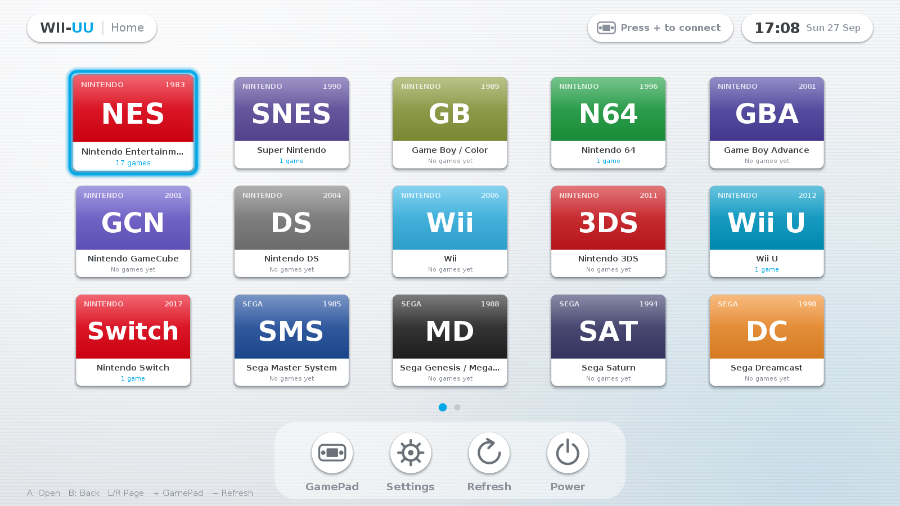

Linux · PC or Raspberry Pi
Set up a WII-UU console
Turn on the device and go straight to the fullscreen game library. OEM mode signs into a dedicated console account and skips automatic setup and update prompts.

Prepare
Linux desktop and console user
Install
Enable OEM mode and add games
Reboot
Check fullscreen startup and controls
1. Prepare the device
Start with a Linux desktop using an X11 session. Create a regular user for the console, sign in as that user, and make sure you can run sudo during setup. Use a WII-UU package built from a revision that includes OEM mode. Open a compatible GitHub Actions build. If its artifact has expired, use a newer build from the default branch.
2. Install OEM mode
Extract the package and open a terminal in the folder containing install.sh. Run this as the console user.
./install.sh --yes --oem --no-shortcutWII-UU is already installed
Replace console with the actual Linux username.
sudo wiiuu-console install --user console --oem --yesAdd the games, emulator cores, and system files needed by your device. For a preconfigured console, launch a game offline before shipping so you can catch any missing dependencies.
3. Reboot and check the console
After reboot, the display manager signs into the console account and opens WII-UU fullscreen. Test controller input, audio, and a game launch. If you ship a separate GamePad, check pairing and the second screen too.
Switch between WII-UU and the desktop
- From WII-UU
- Power → Desktop Mode
- Opens your normal desktop.
- From the desktop
- Return to WII-UU
- Opens the fullscreen console again.
Remove Console Mode
Run the following from the desktop to remove the console boot session.
sudo wiiuu-console uninstallBuilding an image or a local companion app? See the OEM provisioning and API reference.